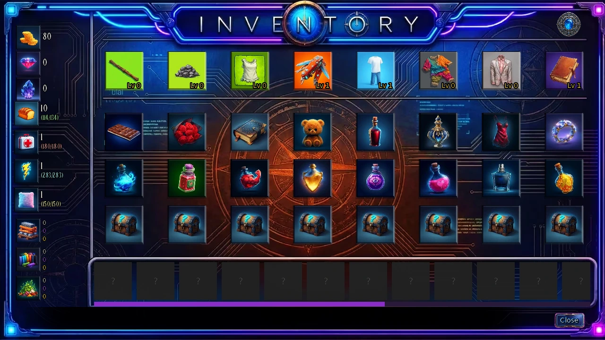
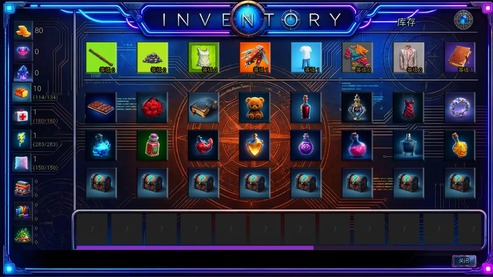

Select a screenshot to enlarge it. Screens show example inventories and progress.
Plan a few useful days
This is a flexible opening plan, not a required build or a day-by-day deadline. Learn the routine first: choose one objective, budget recovery, visit within opening hours and save. The full Getting Started guide explains the interface and character creation.
Start at home, then choose one destination
- Select START TUTORIAL in your bedroom to meet Katie. This is different from the golden-star Tutorial Quests.
- Learn the chest, radar, book, map and cog icons before planning a long trip.
- For the opening story, reach Sonia through University → University Hall → University Research Lab between 09:00 and 17:00. The initial clock is 08:00.
- Use Communications for the current story destination after that first visit; do not repeat the opening destination indefinitely.
Keep time for recovery and food
Read the action tooltip before committing. Low Health, Energy or Calm can make actions take longer, so an exhausted character may spend more time recovering than expected. Eat from Inventory when Satiation is low: Food stock is not the Satiation meter, and carrying Ingredients does not mean you have prepared a meal.
Bedroom recovery offers 15 min,60 min,3 hrs or 6 hrs. Choose a short top-up when it covers the next task, or a longer rest when several meters need recovery. Recovery stops at the maximum. Check hunger before a long rest, then check the clock again before travelling.

Choose work you already qualify for
Two approachable examples are Stock Shelves at the Convenience Store, requiring Stamina 10, and Library Assistant, requiring Intelligence 10. Work still has opening hours, action costs and changing pay. Compare the current tooltip rather than assuming a quoted income is guaranteed for every starting proficiency.
If you do not qualify, train the relevant stat. You do not need to restart a character to learn another activity. Spend only what leaves enough Food, recovery stock and travel time for the objective you chose. Detailed careers, promotion and earnings are in Wealth and Work.
Use the three progress tools differently
- Communications: read the current main-story direction and active side quests.
- Notebook page 10: open Quest Log, expand the relevant category and check completed prerequisites.
- Golden star: inspect Tutorial Quests and claim finished rewards. Some give Wealth or stats; not all give Crystals.

Add one new activity at a time
Use the local map and interior travel first. For a missing character, check the exact room and their schedule. The Present map’s district-switch shortcut needs a Metro Pass; without it, the metro station’s ordinary inter-district actions are still available.
You can explore other eras from the bedroom’s travel actions, but read costs and plan your return. Before combat, learn equipment, recovery and the combat controls. Before gathering, compare resource sources. A new system is easier to understand when it has one clear goal.
Check a blocker before spending more
- A missing scene may need a previous event, relationship stage, different day or a new visit. Higher stats do not replace an unfinished scene.
- A grey action may need specific stock, a learned skill or a current time window. Read its tooltip.
- The doomsday allowance can be extended. Lillian and Seraph offer 1 Crystal for 10 additional game days; check their guides for access.
- Keep a separate manual save before a major purchase or a new activity. F 4 quick save has one position and does not replace a set of manual saves.
Choose the next guide
Character portraits and routes · System directory · Items and cooking · Common questions · Main-story navigation
安排最初几天
这是一份灵活的前期安排，不是必选流派，也不是必须逐日照做的时间表。先熟悉一个循环：选定目标、预留恢复、按开放时间拜访、及时存档。界面与角色创建详见新手入门。
从家中开始，只选一个目的地
- 在卧室选择「开始教程」，认识Katie；这与金色星星里的教程任务分别记录。
- 先认清库存、通信、笔记、地图与系统按钮，再安排远行。
- 开始主线时，在09:00–17:00经大学、大学大厅前往大学研究实验室找Sonia。初始时间为08:00，需要先等待或安排合适的活动。
- 完成首次拜访后，按通信中的当前提示前往下一处，不要一直重复最初的目的地。
给恢复与吃饭留出时间
执行前先读行动提示。生命、精力或镇定过低时，行动可能变慢，因此不要等到完全耗尽才考虑恢复。饱腹感低时，从库存主动使用食物；食物库存不等于饱腹感，带着食材也不等于已经做好餐点。
卧室提供15分钟、60分钟、3小时与6小时恢复。短暂补充已够下一步使用时，可以保留白天；多项状态都低时，再安排较长休息。恢复最多到当前上限。长休息前先检查饥饿，醒来后重新确认时间，再出发。

先做当前够条件的工作
可以先看便利店的补货上架（耐力10）或图书馆的图书馆助理（智力10）。工作仍有开放时段、行动消耗与收入变化；以当前提示为准，不要把示例工资当作所有专长都能固定取得的收入。
条件不够时，训练对应属性即可，不必为了另一项活动重开角色。消费后仍应留够食物、恢复补给与目标所需的时间。完整职业、晋升和收入见财富与工作。
分清三种进度提示
- 通信：查当前主线方向与正在进行的支线。
- 笔记第10页：打开任务日志，展开相关类别，确认前置是否已经完成。
- 金色星星：查看教程任务，并领取已经完成的奖励；部分奖励是财富或属性，并非全都给水晶。
一次增加一种新活动
先熟悉当前区域地图与建筑内部的移动。人物不在时，核对具体房间和日程。现代地图的区域切换快捷按钮需要地铁通票；尚未取得时，仍可到地铁站使用普通跨区行动。
卧室的时代旅行行动可带你前往其他时代，但出发前要读消耗，并安排返回与恢复。准备战斗前，先了解装备、补给与战斗操作；准备采集前，先比较资源来源。带着一个明确目标接触新系统，更容易上手。
卡住时，先排查再投入
- 场景不出现，可能缺前置事件、关系阶段、新的一天或重新进入地点；属性再高，也不能代替尚未完成的场景。
- 行动变灰，可能缺指定库存、已学技能或当前时段；先读提示。
- 末日倒计时可以延长。Lillian与Seraph提供1颗水晶换10个游戏日的服务，访问条件见各自指南。
- 重要购买或新活动前，保留独立手动存档。F4快速存档只有一个位置，不能代替多份手动存档。
按当前需要继续
Adapted and updated from the community Chronoromancer Wiki. Community source and history · CC BY-SA 4.0. Game images © Chronoromancer Studio.